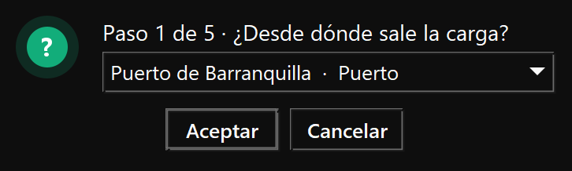
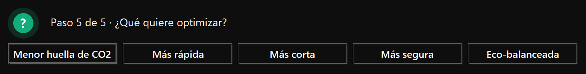
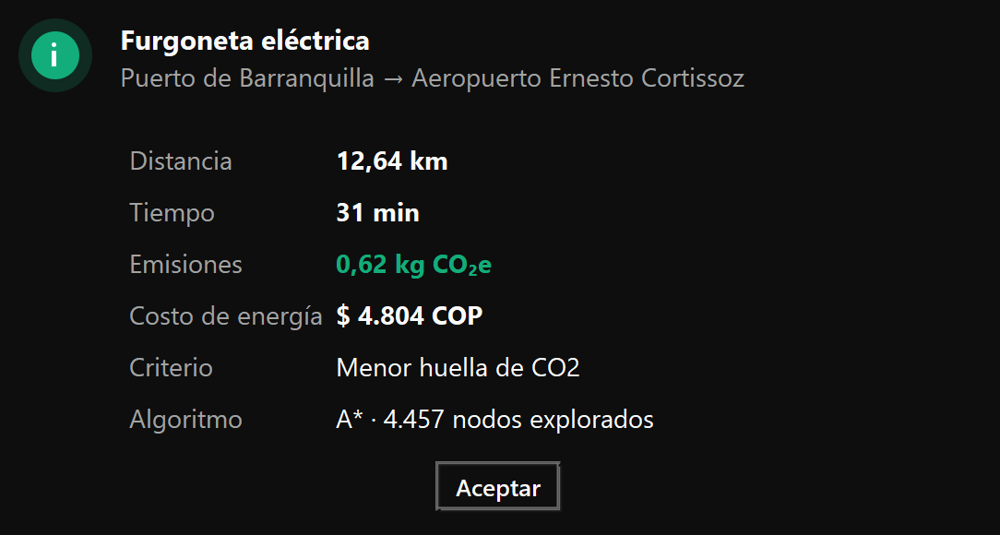
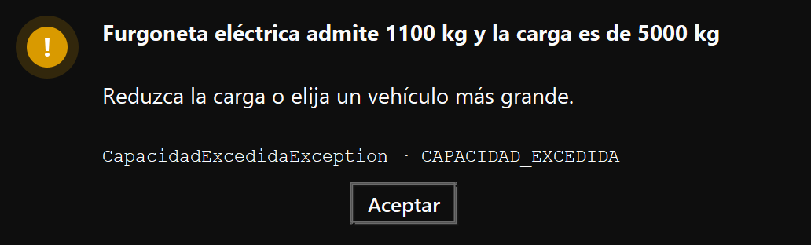

—
archivos .java
—
líneas de código
—
clases que usan
extends—
llamadas a
JOptionPaneLas líneas resaltadas corresponden al concepto elegido. El contenido se genera
con python analisis/07_codigo_java.py a partir de los archivos reales.
Aplicación de escritorio
Green Route en Java Swing
La misma lógica del motor también tiene una interfaz de escritorio. Cada pantalla es una subclase de la clase abstracta
Pantalla, los botones heredan de JButton, el mapa hereda de JComponent y sobrescribe
paintComponent(), y el tema negro / blanco hereda de DefaultMetalTheme.
AbstractTableModel propio y una celda que dibuja barras.getSuperclass(); los valores verdes salen de la misma llamada polimórfica.extends, implements, @Override y JOptionPane.Cuadros de diálogo
El asistente con JOptionPane
La clase AsistenteJOptionPane planifica un envío completo solo con cuadros de diálogo: valida la carga con
try / catch y, si el motor lanza una excepción propia, el tipo de mensaje depende de la subclase capturada.

showInputDialog(...) con una lista desplegable de los 12 puntos logísticos.
showOptionDialog(...) con un botón personalizado por criterio de optimización.
showMessageDialog(..., INFORMATION_MESSAGE) con el resultado en HTML.
CapacidadExcedidaException capturada → WARNING_MESSAGE.// AsistenteJOptionPane.java · validación de la carga
while (true) {
String texto = JOptionPane.showInputDialog(padre, "Peso de la carga en kilogramos:", "600");
if (texto == null) return -1; // Cancelar
try {
double kg = Double.parseDouble(texto.trim().replace(",", "."));
if (kg <= 0) throw new NumberFormatException("debe ser positivo");
return kg;
} catch (NumberFormatException e) {
JOptionPane.showMessageDialog(padre, "No es un peso válido", "Dato inválido", JOptionPane.ERROR_MESSAGE);
}
}Ejecución
Cómo abrir la aplicación de escritorio
.\greenroute-java\compilar.ps1 # compila las 70 clases
.\greenroute-java\escritorio.ps1 # abre el menú inicial (JOptionPane)